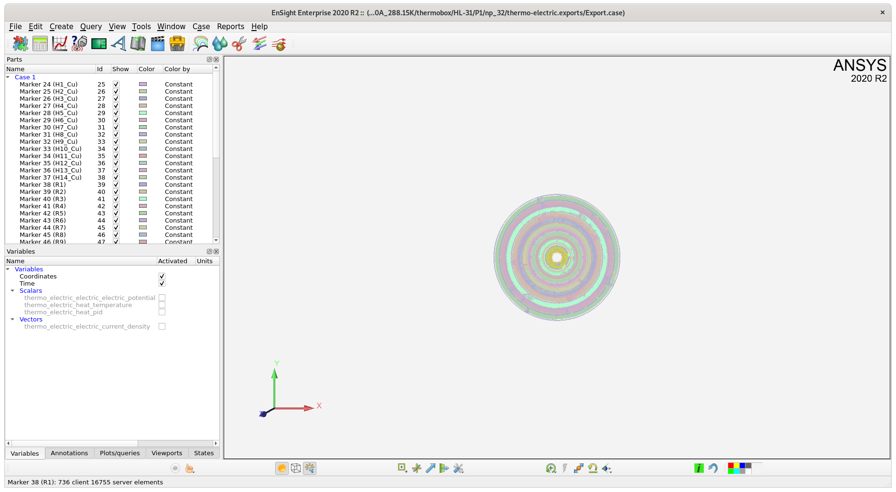

HiFiMagnet PostProcessing documentation
Welcome to HiFiMagnet processing documentation!
1. Directory structure
The simulations results are stored in the directory defined by
the directory key in the cfg file. This path is relative to
the directory feel defined in your environment or by default.
|
The When running HiFiMagnet or Feel++ apps on premise,
When using container, |
feel directory.
├── exprs
│ ├── ginacExprDefaultFileName0
│ ├── ginacExprDefaultFileName0.desc
│ ├── ginacExprDefaultFileName0.so
│ ├── ...
└── np_32
├── coupled-model_3D_P1_N1.json
├── exports
│ └── ensightgold
│ └── coupledModel
│ ├── coupledModel-32.sos
│ ├── coupledModel.case
│ ├── coupledModel.current_density.vec.0001
│ ├── coupledModel.electric_field.vec.0001
│ ├── coupledModel.electric_potential.scl.0001
│ ├── coupledModel.geo.0001
│ ├── coupledModel-paraview-32.sos
│ ├── coupledModel.temperature.scl.0001
│ └── coupledModel.timeset
├── journal.json
├── logs
│ ├── feelpp_hfm_coupledmodel_3DP1N1.ERROR -> feelpp_hfm_coupledmodel_3DP1N1.stokes.jay.log.ERROR.20201009-145255.63595
│ ├── feelpp_hfm_coupledmodel_3DP1N1.INFO -> feelpp_hfm_coupledmodel_3DP1N1.stokes.jay.log.INFO.20201009-151629.68921
│ ├── ...
├── thermo-electric.electric.measures.csv
├── thermo-electric.electric.save
│ └── electric-potential.h5
├── thermo-electric.exports
│ ├── Export-32.sos
│ ├── Export.case
│ ├── Export.geo
│ ├── Export-paraview-32.sos
│ ├── Export.thermo-electric.electric.current-density.vec.0001
│ ├── Export.thermo-electric.electric.electric-potential.scl.0001
│ ├── Export.thermo-electric.heat.temperature.scl.0001
│ └── Export.timeset
├── thermo-electric.heat.measures.csv
├── thermo-electric.heat.save
│ └── temperature.h5
└── thermo-electric.toolbox-info.txtThe results, per se, are stored in the np_32 directory.
The name changes according to the number of cores you have used for running your simulations.
The content of this directory depends on the PostProcess section in the json model file.
Generally this directory will hold:
-
some
csvfiles, -
some
physic.savedirectories that contain solution forphysicin hdf5 format, -
some
physic.exportsdirectories that contain files for visualization for eachphysic
In addition you can find files for logging what has been done during the simulation and some journal files to access some statistics about your simulation.
2. Viewing csv files
csv files contains the data corresponding to Measures data.
These files may be read using any csv apps.
|
using matplotlib and pandas |
3. Using EnSight
physic.export directory contain files for visualization. The native format for this file is Ensight Gold.
3.2. Remote rendering
For large simulation, we advise you to use ensight remote rendering mode,
even if you can connect via ssh -Y to the server where the results are stored.
Of course, this requires that EnSight is installed on you machine and on the server.
|
EnSight is not installed on Gricad machine. You need to download your results data for visualization. |
To start remote rendering, on Linux just type:
[~trophime/Ansys_exec/ansys_inc/v202/CEI/bin/]ceistart202on windows:
["C:\Program Files\Ansys Inc\v202\CEI\bin"\]ceistart202-
Check the
Remote Servermenu, -
Enter the name of
Remote computerto be used -
Uncheck the
ssh Tunneloptions -
Click on
Launch
After some seconds (or minutes) depending on your connection, you will get the main EnSight window.
Finaly, click on Cancel and proceed to load your data.
From the top menu File:
-
click on
Open -
navigate to your data
Exportdirectory -
Select the
casefile
In the left part of EnSight windows, you shall see the details of the loaded parts for your case

Now you can select your case in the part view and move you data in the main visualization frame with mouse buttons.
|
By default, the geometry will be displayed as wireframes.
To change this default, once you have slected your parts you have to switch to
|
3.2.1. Viewing a field
To view the temperature field in the magnet:
-
right click on the selected part *
Now we will remove 1/4th of the insert to have a better view of the temperature distribution. To do so:
-
select all the parts,
-
click on the scissors icon
This will bring up a new window:
-
check box and outside from the slidding menus
-
check
advanced -
define the geometry of the box
-
finaly click on
create with selected partat the button of newly create windows
You shall see something like that:
3.2.2. Plotting field profiles
To view the temperature field distribution along a line, proceed as follows:
-
click on "Query" icon
-
select type of query and a field to plot:
-
click on Tool location to secify the position of the lines
Finaly you shall get a plot that will be displayed in the main windows.

3.2.3. Exporting query data
To export query data for use in an external software:
-
Select the
Plot/Queriestab in the bottom left part of ensight window, -
Select the query you want to export
-
Right click on the selected query to show an optional menu
-
Select
Data -
Select the format for the export

3.2.4. Save image
To save ensight window in an image, just use:
-
From the main menu:
File/export/image
A window will pop up. Fill the empty field to actually save the image.
3.2.5. Using Ensight HiFiMagnet toolbox
For sake of use, a number of extensions has been developped to perform more easily certain operations while processing HiFiMagnet simulations results. These tools are group in a toolbox.
To access the toolbox, click on the toolbox icon  :
:
-
click on the + button in front of HiFiMagnet to have the list of existing extension,
-
click on the extension you would like to run
A window will pop up for most of the extensions.
Fill the parameters requested, then click on OK.
Detailled list of extensions:
-
plots extensions:
-
Over Ox: profile of a field along an line on Ox axis, -
Over Oy: profile of a field along an line on Oy axis, -
Over Oz: profile of a field along an line on Oz axis, -
Over Theta: profile of a field along a circle at a givenzaltitude.
-
-
statistics extensions:
-
pdf graph: display an histogramme of the fraction of volume per iso-value of a field, -
statistics: display statistic by domains (aka markers)
-
TODO
-
One Case: -
Compare two cases: -
Define Units:
3.2.6. Using Ensight python interface
It is also very convenient in Ensight to run some python script in background to extract/generate some data for a given case without having to really "open" Ensight. To do so, you can use something like that:
ensight102 [-batch] -p my_script.py -pyargv my_script_arguments -endpyargv -batch`The -batch option force ensight to work in batch mode (ie. without any user intervention and without the need to open ensgiht).
As an example:
ensight102 -X [-batch] -p probe_voltage.py -pyargv -i test/hdg-ibc/HL-31/P1/np_32/hdg.poisson.electro.exports/Export.case -o I25kA_dittus_perH.dat -endpyargvThis will extract computed voltage at given points from Export.case.
4. Using ParaView
4.1. On Premise
-
type
paraview
see this [www.mn.uio.no/astro/english/services/it/help/visualization/paraview/paraviewtutorial-5.6.0.pdf](tuto)
TODO
4.1.2. create a macro
-
Check (Paraview wiki.
-
Check this [forgeanalytics.io/blog/creating-a-python-trace-in-paraview/](page) to create Trace.
4.1.3. create a vtkjs scene
See this [github.com/Kitware/vtk-js/blob/master/Utilities/ParaView/export-scene-macro.py](python script).